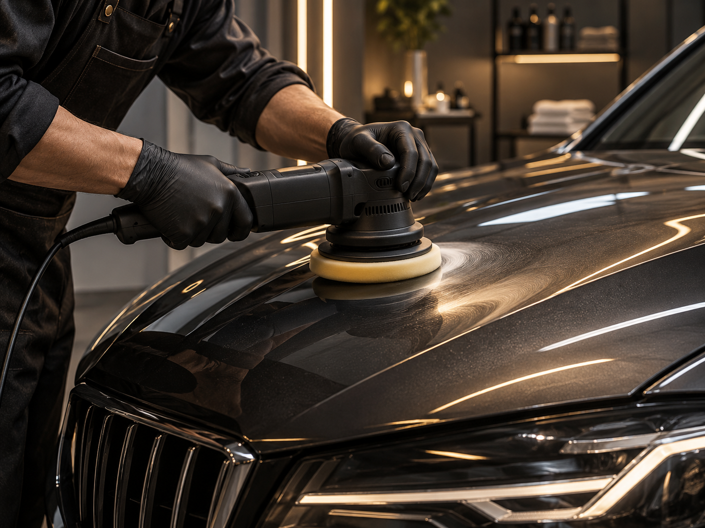

Exempel
Utvändig biltvätt
En grundlig rengöring av bilens utsida för en ren och välvårdad helhet.
Fråga om tjänstenBilvård i Jordbro
Välkommen till Car Auto Clinic Stockholm. Upptäck verksamheten och ta nästa steg mot en välvårdad bil.
Om verksamheten
En bilvårdsverksamhet med bas i Jordbro, Haninge – presenterad med tydlighet, omsorg och en enkel väg till personlig kontakt.
CAR AUTO CLINIC STOCKHOLM AB är verksamt inom bilvård samt registrerat för allmän service och reparation av motorfordon. Exakt tjänsteutbud bekräftas direkt med företaget.

Möjligt tjänsteutbud
Exempel
En grundlig rengöring av bilens utsida för en ren och välvårdad helhet.
Fråga om tjänstenExempel
En mer omfattande genomgång som kan anpassas efter bilens skick och behov.
Fråga om tjänstenExempel
Ett möjligt tillval för den som vill ge bilens lack ett extra lager omsorg.
Fråga om tjänstenVisuell inspiration
Nästa steg
Kontakta verksamheten för aktuell information om tjänster och tillgänglighet.